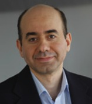
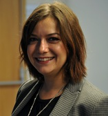

ÖzÜ Oyun Atölyesi
Akademik Kadro
|
Tankut Barış Aktemur Yardımcı Doçent E-posta: baris.aktemur@ozyegin.edu.tr Tel: +90 216 564 93 61 Web | ||
|  |
Tanju Erdem Profesör E-posta: tanju.erdem@ozyegin.edu.tr Tel: +90 216 564 93 37 Özgeçmiş |
İdari Organizasyon
|  |
Uğur Ermez Yetkin Tanıtım ve Başvuru Sorumlusu E-posta: tanitim.basvuru@ozyegin.edu.tr Tel: +90 216 564 9 564 |
Asistanlar
| Arman Garip | |
| Burcu Sarıkaya | |
| Enes Şenel | |
| Eray Tunçer | |
| Muratcan Çiçek | |
| Naz Levent | |
| Oğuz Gelal | |
| Ömür Güngören |
Teşekkürler
Aşağıda ismi geçenlere, geçmiş atölyelere vermiş oldukları değerli katkıları için teşekkür ediyoruz.
| İsmail Arı | Eğitmen |
| Ahmet Kermen | Eğitmen |
| Cemil Türün | Konuk Konuşmacı |
| Tolga Abacı | Konuk Konuşmacı |
| Deniz Aslı Soykurum Çetin & Atılım Çetin | Konuk Konuşmacı |
| Furkan Kıraç | Konuk Konuşmacı |
| Murat Şensoy | Konuk Konuşmacı |
| Erhan Öztop | Konuk Konuşmacı |
| Alperen Talaslıoğlu | Asistan |
| Arman Garip | Asistan |
| Aydın Güzel | Asistan |
| Burak Tutanlar | Asistan |
| Burcu Sarıkaya | Asistan |
| Deniz Sökmen | Asistan |
| Doğukan Ergün | Asistan |
| Enes Şenel | Asistan |
| Eray Tunçer | Asistan |
| Hakan Uyumaz | Asistan |
| Naz Levent | Asistan |
| Oğuz Gelal | Asistan |
| Ömür Güngören | Asistan |
| Taha Doğan Güneş | Asistan |
| Uğur Özkan | Asistan |